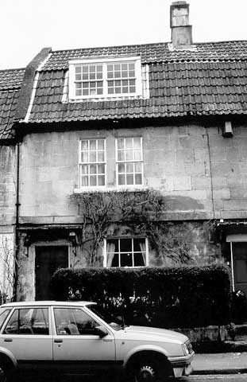
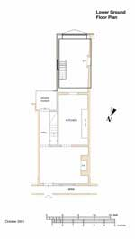

Type of building:
Mid mixed terrace
Listing:
Grade ll
Plan and elevation:
Double pile, single fronted. Two-storeys and attic. Plus a two-storey
rear extension.
Summary of the probable main building
history:
Mid 18th Century. Extended to the rear and other alterations in the early
19th Century.

North elevation
Exterior:
North (front) elevation of ashlar construction. First floor with two six-over-six
sash windows set close together. Ground floor with one six-over-six sash
window and entry to the left with a six-panelled door. Chamfered dressed
stone door surround. Scrolled and ogee moulded stone hood brackets (with
a replacement wooden hood). Plat band between ground and first floor.
Dormer at attic level. Tiled `M' mansard (gabled gambrel) roof. Stone
coped verge. Shared ashlar stack.
South (rear) extension of coursed rubble stone with dressed quoins. Rear door gives access to a terrace elevated over the garden.
There is a second extension of ashlar construction under a pitched roof with coped verges. Built on ground sloping steeply southwards towards the river. House then split-level with the extension's first floor at the ground floor level of the main building and the ground floor of the extension in practice providing the house with a lower ground floor. Upper level of the extension has a wooden four-light bay window, the lower level has inserted modern double glazed sliding doors giving access to the garden
Interior:
Chamfered stone fire surround in the ground floor front room. Doors and
alcove cupboards fitted with iron `L' hinges (but are possibly later introductions).
The ground floor rear room contains a Bath type iron grate with the stone
surround masked by an applied reproduction fluted wood surround in Regency
style. The front door, the interconnecting door giving access to the staircase
and the rear door are in line. Signs of a now removed partition wall between
the first two doors, which apparently once provided the property with
a corridor. Now the principal entry is direct from the street into the
ground floor front room.
On the first floor the stairway landing and the rear room have moulded plaster cornices. The latter room contains a simple iron grate set in a beaded stone surround. Major interest, however, is the first floor front room, which once apparently functioned as a drawing room with its double windows and plaster work. The ceiling plasterwork is in the Rococo style consisting of a centre of acanthus leaves from which flows a naturalistic design of rose flowers, leaves and stems. In the four ceiling corners, four mythological birds resting on designs of roses, grapes, ivy and wheat respectively. Also, moulded cornices and plaster work on the fireplace wall with a basket of fruit the central design over the fire place. A fluted iron grate with roundels is fitted. Arched alcoves each side of the fireplace.
Date & development:
The house structure (ashlar and the `M' mansard roof) and the internal
fittings indicate a mid 18th Century construction date at which time the
property together with its western neighbour may have stood alone as a
semi-detached pair, although with the possibility that it abutted a small
single pile cottage to its east (see BE 003). Assuming the existence of
a ground floor corridor at this date, the first floor drawing room could
be entered from the street without passing through any other room which
is in keeping with the period. Clearly, the occupiers had some local status.
The rear extension appears on the 1840 Tithe Map and its materials and
design are consistent with an early 19th Century date. The 1840 Tithe
Map also shows the house and its western neighbour as being in common
ownership - owned by one Fisher (forename not recorded on the consulted
parish copy) together with land to the west and occupied by Francis Cannings
(market gardener). The properties were in joint ownership as late as 1972
when auctioneers disposed of the estate of the late owner, Mrs. C.H. Brocklesbury.
The auctioneers particulars also showed that the two houses were interconnected
at first floor level although there is no present visible physical sign
of a doorway.
References:
- 1840 Batheaston Tithe Map and Apportionment Schedule Somerset Record
Office
- Auctioneers particulars 1972 The Batheaston Society Archive S.C.3. 0046
- Batheaston Society archives
Reference Pictures
| Six-panelled front door |
Front door - Detail of escutcheon |
Fireplace alcove cupboard with ventilation
grill |
| Rococo style plaster
ceiling of the 1st floor drawing room |
Rococo style plaster ceiling (detail) |
Survey drawings
|  |
||
| Ground
Plan |
Lower
Ground Plan |
Section |